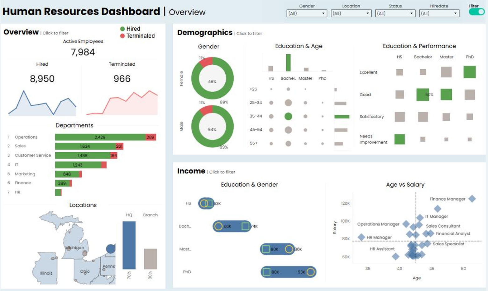

Tableau
Built for Exploration
Tableau is where I build things people explore rather than read. A Power BI report tends to answer a defined set of questions on a schedule. A Tableau dashboard invites someone to poke at it, filter down to their own slice, and follow a thread I never anticipated. Both have their place. The choice comes down to whether the audience needs an answer or needs to go looking for one.
The same design discipline carries over. Neutral holds the structure, and color marks the thing worth noticing. Every panel on the dashboard below is click-to-filter, so a question that starts in one place gets answered across the whole view without anyone writing a query.
HR Analytics Dashboard
Workforce Overview · Headcount, Movement, Demographics, and Pay

A workforce overview built around the questions an HR leader actually opens a dashboard to answer. How many people do we have, who is coming in and going out, where are they, and what does the pay picture look like across education and role.
The layout runs three panels. Overview carries headcount, hires, and terminations with the trend behind each, then breaks them out by department so churn is visible against the size of the team. Demographics covers the gender split, education against age, and a performance matrix showing where the strongest people sit by credential. Income puts salary against education and gender, then plots age against salary with job titles called out, which is where most compensation questions start.
The department bars carry the color. Hires and terminations sit in the same bar, so a team losing people faster than it replaces them reads immediately without anyone calculating a rate. Operations shows 2,429 against 289, Sales 1,634 against 201. The rest of the layout stays neutral so those bars hold the attention.
Every panel is click-to-filter. Selecting a department reframes demographics and income around that group alone, so a question that starts in one panel gets answered in the other two. Four filters across the top handle gender, location, status, and hire date for anything the panels do not cover.
Covid-19 Visualization
From SQL Transformation to Interactive Dashboard

Once the WHO Covid-19 datasets were transformed and joined in SQL, I brought the results into Tableau to show infections and deaths by country and continent. The numbers on their own are hard to sit with. Putting them on a map and letting someone move through the timeline is what makes the progression land.
The SQL transformation work behind this visualization is on the Other Projects tab.
Tableau Public Collection
Executive Overviews, Compensation, and Sales Visuals

The rest of my published work sits on Tableau Public. Executive Overview reports built for leadership audiences, a bonus analysis covering compensation distribution, and sales visuals working through performance trends and territory breakdowns. The collection spans a few different domains on purpose, because the design questions change depending on who is going to open the thing.